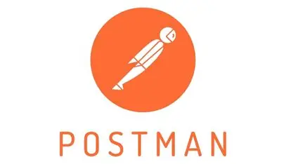

Mohammad Abdul Nadeem

Senior QA Automation Engineer | 11+ Years Experience
Senior QA Automation Engineer | 11+ Years Experience
11+ years of IT experience in Automation Testing and Software Development with expertise in Selenium, Appium, BDD, TestNG, JUnit, Playwright and API Testing...
 Selenium
Selenium
 Playwright
Playwright
 Cucumber
Cucumber
 JUnit
JUnit
 Java
Java
 Python
Python
 JavaScript
JavaScript
 PySpark
PySpark
 C
C
 C++
C++
 GitHub
GitHub
 GitLab
GitLab
 Bitbucket
Bitbucket
 SVN
SVN
 Oracle
Oracle
 MySQL
MySQL
 PostgreSQL
PostgreSQL
 Salesforce
Salesforce
 Siebel
Siebel
 Windows 11
Windows 11
 Linux
Linux
Client: OKX
Designation: Senior Automation Test Engineer
Tools:

Duration: September 2024 – September 2025
Roles & Responsibilities:
 Project #2: Wiz
Project #2: Wiz
Client: Wiz
Designation: Automation Test Engineer
Tools:
Duration: December 2021 – June 2024
Roles & Responsibilities:
MCA (Master of Computer Applications), Chaitanya Degree & PG College, Kakatiya University, India (2007 – 2010)
Email: abdul.proffj@gmail.com
Phone: +852 56433149
LinkedIn Profile